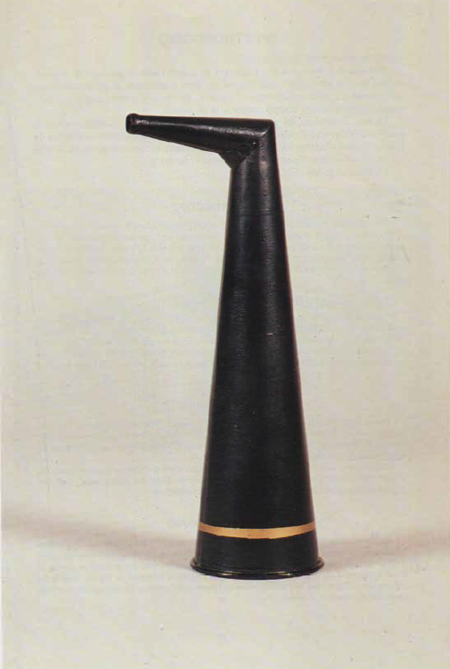

Cornetto acustico
Scuola di provenienza: Liceo Statale "P.E. Imbriani", Avellino
Settore: Acustica
Costruttori: Sconosciuto
Materiali: Alluminio
Accessori: Nessuno
Stato di conservazione: Buono
Descrizione: L´intensità di un suono dipende dall´ampiezza delle onde elastiche che stimolano l´orecchio. In generale si può dire che quando l´ampiezza aumenta cresce l´intensità del suono provocato. Perciò quando si desidera rinforzare l´intensità di un suono si applicano dispositivi che aumentano l´ampiezza delle onde acustiche che pervengono all´orecchio. Si può evitare la diminuzione dell´ampiezza delle onde elastiche modificandone il percorso, in modo che la propagazione non avvenga per onde sferiche. Ciò si ottiene, ,per esempio, convogliando le onde dentro dei tubi. Quando le onde si propagano entro tubi di piccolo diametro, l´intensità del suono come ha fatto notare Biot non diminuisce notevolmente anche per distanze rilevanti, poiché l´energia di vibrazione viene convogliata in un´unica direzione. Su questo principio sono basati: i tubi acustici, il megafono, che serve a trasmettere ordini a distanza; il cornetto acustico, adoperato per parlare con persone un po´ sorde, che introducono la parte stretta nell´orecchio per concentrare e intensificare le onde sonore captate dell´aperture a grande superficie